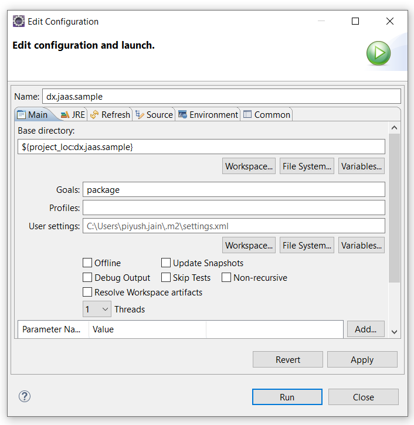

Building a custom JAAS login module for your Identity Provider (IdP)
Overview
You can build a custom Java Authentication and Authorization Service (JAAS) login module to either make additional authentication decisions or add information to the subject to make fine-grained authorization decisions inside your application.
The sample implementation custom JAAS login module provided here uses Rule-based user groups (Softgroups) that allows you to define dynamic portal user groups and resolve users role/group membership. For more information on Rule-based user groups, see capabilities.
To resolve transient users role/group membership, you can retrieve roles/groups information from IdPs claim token (JWT). In addition to roles/groups, you can use other attributes from the claim token, for example, the email attribute to determine the domain the user belongs to. These attributes will help you define rule-based user groups within the Softgroups.
Once the attribute values are determined, the attribute-value pairs are fed into the Softgroup service provided by the Softgroups portlet. This service will then determine user groups based on rules defined within the Softgroup portlet. Once these groups are determined they can help you in facilitating access control. For more information, see Configuring Rule-based user groups for Transient Users.
Extending JAAS LoginModule interface
Different IdPs have different ways to add the role/group attributes to the claim token (JWT). Some of the IdPs could add them as a comma-separated string, and some may add them as an array.
To address this variablilty, there is a need to provide a common interface that allows you to adjust the implementation specific to your IdP.
Defining ITransientUsersLoginModule interface
This interface extends the standard LoginModule interface and introduces two additional methods for customization.
public interface ITransientUsersLoginModule extends LoginModule {
/**
* Resolve and return the groups associated with the provided user from OIDC.
*
* @param uniqueid The unique identifier for the user.
* @param subjectUserInfoJSON The user information retrieved from OIDC.
* @return A map of group names associated with the user.
*/
public Map<String, List<String>> getGroupsForCurrentSubject(String uniqueid, JSONObject subjectUserInfoJSON);
/**
* Resolve and return the groups that are available to be used within DX from Softgroups using attribute values.
*
* @param attributeValues A map of attribute values, typically retrieved from OIDC.
* @return A list of group names available for use within DX.
* @throws NamingException If there is an issue with naming.
* @throws SoftgroupServiceException If there is an issue with Softgroup service.
*/
public List<String> getAvailableGroups(Map<String, List<String>> attributeValues) throws NamingException, SoftgroupServiceException;
}
Implementing ITransientUsersLoginModule interface
The central component in this approach is the TransientUsersLoginModule, which implements the ITransientUsersLoginModule interface.
The sample code and JAAS module implementation provided is an example of how you can implement the two interface functions in addition to the LoginModule interface functions for Keycloak. This implementation provides authentication for general transient users, as well as advanced functionality, such as using Softgroups to add group/role assignments to transient users within DX.
/*
********************************************************************
* Licensed Materials - Property of HCL *
* *
* Copyright HCL Technologies Ltd. 2001, 2023. All Rights Reserved. *
* *
* Note to US Government Users Restricted Rights: *
* *
* Use, duplication or disclosure restricted by GSA ADP Schedule *
********************************************************************
*/
package com.hcl.dx.auth.jaas.impl;
import java.util.ArrayList;
import java.util.HashMap;
import java.util.HashSet;
import java.util.Hashtable;
import java.util.Iterator;
import java.util.List;
import java.util.Map;
import java.util.Set;
import java.util.logging.Level;
import javax.naming.InitialContext;
import javax.naming.NamingException;
import javax.security.auth.Subject;
import javax.security.auth.callback.Callback;
import javax.security.auth.callback.CallbackHandler;
import javax.security.auth.callback.NameCallback;
import javax.security.auth.callback.PasswordCallback;
import javax.security.auth.login.LoginException;
import com.hcl.dx.auth.jaas.ITransientUsersLoginModule;
import com.ibm.json.java.JSON;
import com.ibm.json.java.JSONArray;
import com.ibm.json.java.JSONObject;
import com.ibm.portal.auth.tai.ExternalIdentityCredential;
import com.ibm.websphere.security.UserRegistry;
import com.ibm.websphere.security.auth.WSLoginFailedException;
import com.ibm.wsspi.security.auth.callback.WSTokenHolderCallback;
import com.ibm.wsspi.security.token.AttributeNameConstants;
import com.ibm.websphere.security.oidc.util.OidcClientHelper;
import com.ibm.wps.services.config.Config;
import com.ibm.wps.vmm.adapter.softgroups.Softgroup;
import com.ibm.wps.vmm.adapter.softgroups.SoftgroupService;
import com.ibm.wps.vmm.adapter.softgroups.SoftgroupServiceException;
import com.ibm.wps.vmm.adapter.softgroups.SoftgroupServiceFactory;
import java.util.logging.Logger;
/*
* TransientUsersLoginModule works in conjunction with Websphere OIDC TAI
* This class builds the Subject such that Transient Users function properly
*/
public class TransientUsersLoginModule implements ITransientUsersLoginModule {
/* logger name */
private static final String LOG_CLASS = TransientUsersLoginModule.class.getName();
/* the classes logger instance */
private static final Logger LOGGER = Logger.getLogger(LOG_CLASS);
private Subject currentSubject;
private CallbackHandler currentCallbackHandler;
private Map<String, Object> currentSharedState;
private JSONObject subjectUserInfoJSON;
private String softgroupKey = null;
private String dataSourceJNDIName = null;
private String dbSchema = null;
private String dbType = null;
@SuppressWarnings("unchecked")
@Override
public void initialize(Subject subject, CallbackHandler callbackHandler,
Map<String, ?> sharedState, Map<String, ?> options) {
final String METHOD = "initialize";
LOGGER.logp(Level.FINE, LOG_CLASS, METHOD, "TransientUsersLoginModule.initialize()");
currentSubject = subject;
currentCallbackHandler = callbackHandler;
currentSharedState = (Map<String, Object>) sharedState;
softgroupKey = (String) options.get("sgroup.softgroupKey");
dataSourceJNDIName = (String) options.get("sgroup.dataSourceJNDIName");
dbSchema = (String) options.get("sgroup.dbSchema");
dbType = (String) options.get("sgroup.dbType");
}
@SuppressWarnings("unchecked")
@Override
public boolean login() throws LoginException {
final String METHOD = "login";
LOGGER.logp(Level.FINE, LOG_CLASS, METHOD, "TransientUsersLoginModule.login()");
String uniqueid = "";
Hashtable hashtable = new Hashtable();
Callback callbacks[] = new Callback[3];
try {
callbacks[0] = new WSTokenHolderCallback("");
callbacks[1] = new NameCallback("User:");
callbacks[2] = new PasswordCallback("Password:", false); // not used
currentCallbackHandler.handle(callbacks);
boolean requiresLogin = ((WSTokenHolderCallback) callbacks[0]).getRequiresLogin();
if (requiresLogin) {
String username = ((NameCallback) callbacks[1]).getName();
LOGGER.logp(Level.FINE, LOG_CLASS, METHOD, "username = " + username);
if (username != null) {
try {
// Try to find valid user for given username/email
InitialContext ctx = new InitialContext();
UserRegistry reg = (UserRegistry) ctx.lookup("UserRegistry");
uniqueid = reg.getUniqueUserId(username);
// If duplicate user found in user registry throw exception to fail login.
if (uniqueid != null) {
LOGGER.logp(Level.WARNING, LOG_CLASS, METHOD, "TransientUsersLoginModule.login - Duplicate user lookup error. Login rejected for user: " + uniqueid);
throw new com.ibm.websphere.security.UserMappingException("Duplicate Registry User Error");
}
} catch (com.ibm.websphere.security.EntryNotFoundException e1) {
// Entry was not found - or not unique in defaultRealm, user is transient user
LOGGER.logp(Level.FINE, LOG_CLASS, METHOD, "TransientUsersLoginModule - transient user");
// Valid OIDC TAI and WEB_INBOUND configuration should be provided as part of the transient user setup.
uniqueid = "uid=" + username + ",o=transparent";
hashtable.put(AttributeNameConstants.WSCREDENTIAL_UNIQUEID,uniqueid);
hashtable.put(AttributeNameConstants.WSCREDENTIAL_SECURITYNAME,uniqueid);
// Get user info from Subject
try {
String subjectUserInfoString = OidcClientHelper.getUserInfoFromSubject(currentSubject);
subjectUserInfoJSON = (JSONObject) JSON.parse(subjectUserInfoString);
LOGGER.logp(Level.FINE, LOG_CLASS, METHOD, "TransientUsersLoginModule - subjectUserInfoJSON: " + subjectUserInfoJSON);
} catch (Exception e) {
LOGGER.logp(Level.WARNING, LOG_CLASS, METHOD, "TransientUsersLoginModule - Failed fetching or parsing the userInfo for subject: " + uniqueid);
LOGGER.logp(Level.WARNING, LOG_CLASS, METHOD, "TransientUsersLoginModule - Error during userInfo resolution: " + e.toString());
}
// Add attributes for this user.
hashtable.put("sn", username);
hashtable.put("cn", username);
hashtable.put("uid", username);
// Resolve and add groups and/or email to user attributes hashtable
Map<String, List<String>> groupAttributeValues = getGroupsForCurrentSubject(uniqueid, subjectUserInfoJSON);
if (groupAttributeValues != null && subjectUserInfoJSON != null && subjectUserInfoJSON.get("email") != null) {
LOGGER.logp(Level.FINE, LOG_CLASS, METHOD, "TransientUsersLoginModule - Email & attributevalues provided, set email hashtable & group attribute values");
hashtable.put("ibm-primaryEmail", subjectUserInfoJSON.get("email").toString());
List<String> emailList = new ArrayList<String>();
emailList.add(subjectUserInfoJSON.get("email").toString());
groupAttributeValues.put("email", emailList);
} else if (subjectUserInfoJSON != null && subjectUserInfoJSON.get("email") != null) {
LOGGER.logp(Level.FINE, LOG_CLASS, METHOD, "TransientUsersLoginModule - only Email provided, set email hashtable value");
hashtable.put("ibm-primaryEmail", subjectUserInfoJSON.get("email").toString());
} else {
LOGGER.logp(Level.FINE, LOG_CLASS, METHOD, "TransientUsersLoginModule - No Email provided, set blank value: " + groupAttributeValues);
hashtable.put("ibm-primaryEmail", "");
}
LOGGER.logp(Level.FINE, LOG_CLASS, METHOD, "TransientUsersLoginModule - groupAttributeValues: " + groupAttributeValues);
if (groupAttributeValues != null) {
LOGGER.logp(Level.FINE, LOG_CLASS, METHOD, "TransientUsersLoginModule - Have groupAttributeValues, proceed to getAvailableGroups: " + groupAttributeValues);
List<String> softgroupsList = getAvailableGroups(groupAttributeValues);
hashtable.put(AttributeNameConstants.WSCREDENTIAL_GROUPS,softgroupsList);
}
// Push user attributes to current subject credentials
LOGGER.logp(Level.FINE, LOG_CLASS, METHOD, "TransientUsersLoginModule - hashtable: " + hashtable);
currentSubject.getPublicCredentials().add(hashtable);
currentSubject.getPublicCredentials().add(new ExternalIdentityCredential(hashtable));
currentSharedState.put(AttributeNameConstants.WSCREDENTIAL_PROPERTIES_KEY,hashtable);
} catch (Exception e1) {
LOGGER.logp(Level.WARNING, LOG_CLASS, METHOD, "TransientUsersLoginModule.login failed for user lookup: "+ e1.toString());
throw new Exception(e1);
}
LOGGER.logp(Level.FINE, LOG_CLASS, METHOD, "uniqueid = " + uniqueid);
} else {
LOGGER.logp(Level.FINE, LOG_CLASS, METHOD, "uniqueid is null - do nothing");
LOGGER.logp(Level.FINE, LOG_CLASS, METHOD, "TransientUsersLoginModule failed with uniqueid= " + uniqueid);
return false;
}
} else {
LOGGER.logp(Level.FINE, LOG_CLASS, METHOD, "This is a repeat login, nothing to do.");
}
} catch (Exception e) {
LOGGER.logp(Level.WARNING, LOG_CLASS, METHOD, "TransientUsersLoginModule failed: " + e.toString());
throw new WSLoginFailedException(e);
}
LOGGER.logp(Level.FINE, LOG_CLASS, METHOD, "TransientUsersLoginModule succeeded with uniqueid = " + uniqueid);
return true;
}
/**
* Resolve and return the groups associated to the provided user.
*
* This method is called by the {@code login} function to fetch the groups
* and add them to the {@code WSCREDENTIAL_GROUPS} attribute connected to
* the user subject.
*
* Note that the returned group names work in combination with the
* provided {@code Softgroup}s. Ensure that the appropriate groups are
* defined so that users can be assigned to them.
*
* @param uniqueid the id of the current subject to resolve groups for
* @return {@code List<String>} of group names the current subject is assigned to.
*/
@SuppressWarnings("unchecked")
@Override
public Map<String, List<String>> getGroupsForCurrentSubject(String uniqueid, JSONObject subjectUserInfoJSON) {
final String METHOD = "getGroupsForCurrentSubject";
LOGGER.logp(Level.FINE, LOG_CLASS, METHOD, "TransientUsersLoginModule.getGroupsForCurrentSubject()");
/* Note that the "sgroup.softgroupKey" Config value will need to be defined as a new general property in the configured JAAS module within the WAS ISC.
* In additional to email, this is the value that will be used to fetch the Softgroups from the IDP, for example "groups" or "roles".
*/
List<String> groupList = new ArrayList<String>();
LOGGER.logp(Level.WARNING, LOG_CLASS, METHOD, "TransientUsersLoginModule.getGroupsForCurrentSubject - GOT SOFTGROUPKEY FROM JAAS Properties: " + softgroupKey);
if (subjectUserInfoJSON == null) {
LOGGER.logp(Level.FINE, LOG_CLASS, METHOD, "TransientUsersLoginModule.getGroupsForCurrentSubject - no OIDC User Info available for user: " + uniqueid);
return null;
} else if (softgroupKey == null) {
LOGGER.logp(Level.WARNING, LOG_CLASS, METHOD, "TransientUsersLoginModule.getGroupsForCurrentSubject - no softgroupKey defined in properties: " + softgroupKey);
return null;
}
// Get a JSONArray of values for the softgroupKey provided
JSONArray groupsJSONArray = (JSONArray) subjectUserInfoJSON.get(softgroupKey);
if (groupsJSONArray == null) {
LOGGER.logp(Level.FINE, LOG_CLASS, METHOD, "TransientUsersLoginModule.getGroupsForCurrentSubject - no groups found for property 'user_group_membership' on the OIDC UserInfo JSON for user: " + uniqueid);
return null;
}
// Iterate through the groupsJSONArray and add the values to a groupList
Iterator<String> it = groupsJSONArray.iterator();
while (it.hasNext()){
groupList.add(it.next());
}
// The getSoftgroupsForUser function call needs the attributeValues in the Map<String,List<String>> format
Map<String,List<String>> attributeValues = new HashMap<String,List<String>>();
attributeValues.put(softgroupKey, groupList);
LOGGER.logp(Level.FINE, LOG_CLASS, METHOD, "TransientUsersLoginModule.getGroupsForCurrentSubject - groupsList: " + groupList);
return attributeValues;
}
/**
* Resolve and return the groups that are available to be used within DX.
*
* This method is called by the {@code initialize} function to fetch the
* available groups and declare them to DX through {@Softgroup}s.
*
* Note that the returned group names work in combination with the groups
* users should get assigned to that resolved through the
* {@code getGroupsForCurrentSubject} method.
*
* @return {@code List<String>} of group names available to be used within HCL Digital Experience.
* @throws NamingException
* @throws SoftgroupServiceException
*/
@Override
public List<String> getAvailableGroups(Map<String, List<String>> groupAttributeValues) throws NamingException, SoftgroupServiceException {
final String METHOD = "getAvailableGroups";
LOGGER.logp(Level.FINE, LOG_CLASS, METHOD, "TransientUsersLoginModule.getAvailableGroups()");
SoftgroupService softgroupService;
Set<Softgroup> softgroups = new HashSet<Softgroup>();
// Instantiate the SoftgroupService instance and fetch any Softgroups for the user
if (dataSourceJNDIName != null && dbSchema != null) {
softgroupService = SoftgroupServiceFactory.getSoftGroupService(dataSourceJNDIName, dbSchema, dbType, 0, 100, 3600);
softgroups = softgroupService.getSoftgroupsForUser(groupAttributeValues);
} else {
LOGGER.logp(Level.FINE, LOG_CLASS, METHOD, "TransientUsersLoginModule.getAvailableGroups - groupsList: " + softgroups.toString());
return null;
}
Iterator<Softgroup> it = softgroups.iterator();
ArrayList<String> softgroupsList = new ArrayList<String>();
LOGGER.logp(Level.FINE, LOG_CLASS, METHOD, "TransientUsersLoginModule.getAvailableGroups - groupsList: " + softgroups.toString());
LOGGER.logp(Level.FINE, LOG_CLASS, METHOD, "TransientUsersLoginModule.getAvailableGroups - groupsList toString: " + softgroups.toString());
// Add any available Softgroups matches to the group list to be returned.
while (it.hasNext()){
softgroupsList.add("cn=" + it.next().getGroupName() + ",o=softgroups");
}
LOGGER.logp(Level.FINE, LOG_CLASS, METHOD, "TransientUsersLoginModule.getAvailableGroups - groupsList: " + softgroupsList);
return softgroupsList;
}
@Override
public boolean commit() throws LoginException {
return false;
}
@Override
public boolean abort() throws LoginException {
return false;
}
@Override
public boolean logout() throws LoginException {
return false;
}
}
Building and deploying custom JAAS login module
You can download the entire code for the ITransientUsersLoginModule interface example from here. Here we use Maven and Eclipse to build the custom JAAS login module jar file.
Note
Make sure that the following JAR files are available in the lib folder. These JAR files are found in the app_server_root/plugins folder on the server, for example /opt/HCL/AppServer/plugins.
- com.ibm.ws.runtime.jar
- com.ibm.ws.security.oidc.client.jar
-
Open the Eclipse IDE and import the
dx.jaas.samplefolder from this repository. -
Right-click on the
dx.jaas.samplefolder in Eclipse and select Run as > Maven install. -
Next, go to Run as again and choose
Maven build...Configure your build window with the following details:- Add
packageas a Goal - Check your JRE
- Click Run.

- Add
-
Once it is complete you will get
dx.jaas.sample.jarfile indx.jaas.sample\target\dx.jaas.sample.jarfolder -
Now copy the
dx.jaas.sample.jarinto the classpath (for exampleopt/HCL/lib/ext/for traditional environments or/opt/HCL/wp_profile/classesfor containerized environments):cp dx.jaas.sample.jar /opt/HCL/wp_profile/classes -
Configure the global security settings in WAS ISC. Go to Global Security > JAAS - System Logins > WEB_INBOUND.
-
Add the class name defined within your JAR file or use the default
com.hcl.dx.auth.jaas.impl.TransientUsersLoginModuleclass. -
Set the module order for WEB_INBOUND as follows:
Module Class Name Module Order com.hcl.dx.auth.jaas.impl.TransientUsersLoginModule 1 com.ibm.ws.security.server.lm.ltpaLoginModule 2 com.ibm.ws.security.server.lm.wsMapDefaultInboundLoginModule 3 -
Click OK and Save to save the changes to the master configuration.
-
Restart the server